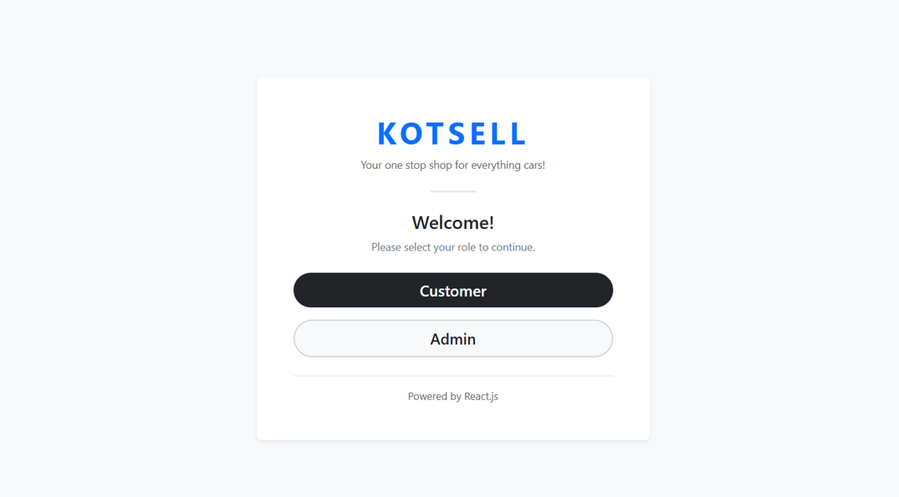
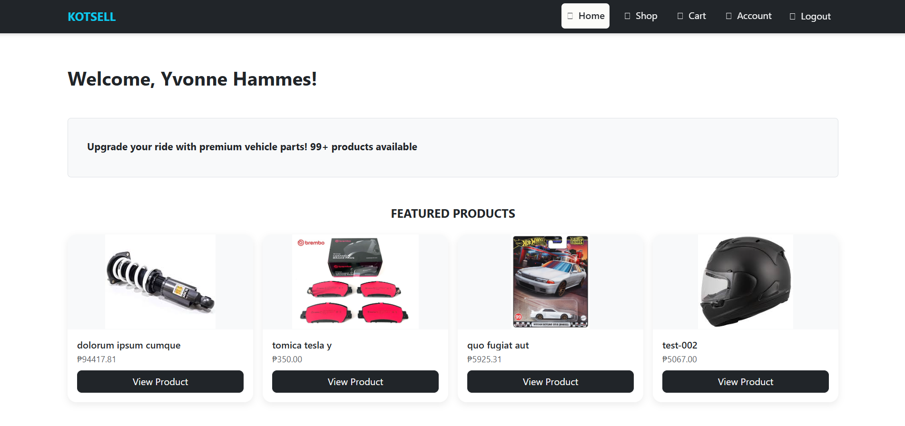
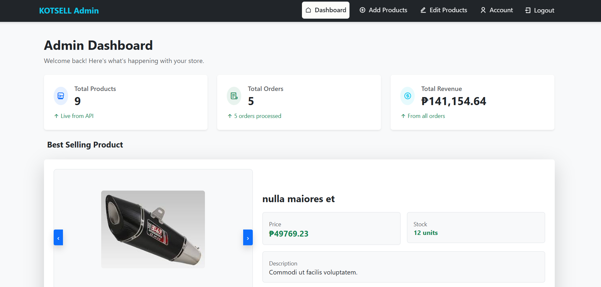

A selection of software, web, and game development projects by
Charles Serrano Carreon, a Computer Science student at
Pamantasan ng Cabuyao. See my background and
skills to learn more.
KOTSELL



An e-commerce web application created for our course CCS112 Applications Development and
Emerging Technologies for the 1st Semester of the 3rd Year of our Computer Science studies.
It integrates React.js for the front-end and Laravel for the back-end.
Date
2025 December 10
Technologies
HTML, CSS, JavaScript, React.js, Bootstrap, Laravel, PHP, MySQL
This is a React project with integrated TensorFlow.js created for our course CCS112 Applications
Development and Emerging Technologies for the 1st Semester of the 3rd Year of our Computer Science studies.
This is a visual novel game created for the laboratory exam of our course CSEG1 Game Concepts and
Production for the 1st Semester of the 3rd Year of our Computer Science studies.
A task manager web application created for our course CCS112 Applications Development and
Emerging Technologies for the 1st Semester of the 3rd Year of our Computer Science studies.
A library management system created for our course CCS112 Applications Development and
Emerging Technologies for the 1st Semester of the 3rd Year of our Computer Science studies.